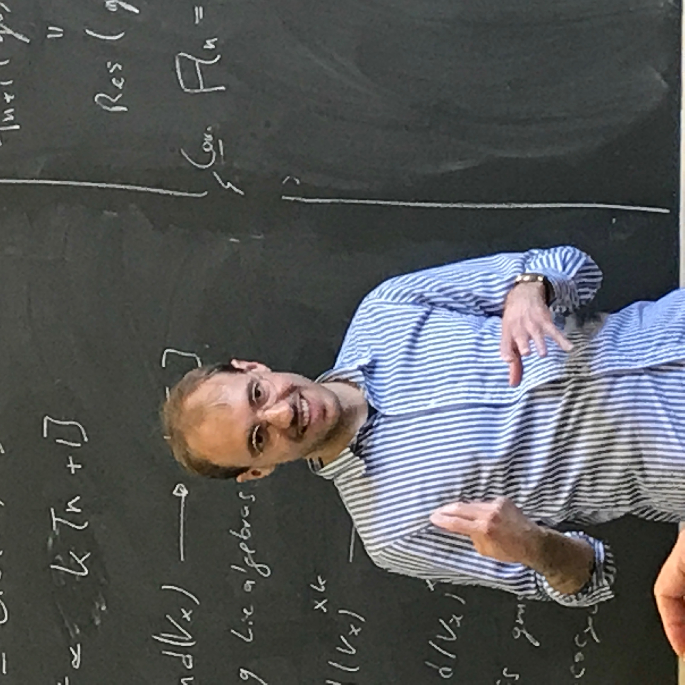

| Contact info:
Department of Mathematics The University of Hong Kong Run Run Shaw Building, Room 211 Pokfulam, Hong Kong |
Email address:
aronah at hku dot hk or aronah at gmail dot com |
 |
Since 2023, I am a postdoctoral fellow, in the research group Xuhua He, at the University of Hong Kong.
From 2021 to 2023, I was a postdoctoral fellow at the Chinese University of Hong Kong mentored by Michael McBreen.
From 2018 to 2021 I was a J.L. Doob Research Assistant Professor at the University of Illinois at Urbana--Champaign mentored by Chris Dodd.
Before that I was a graduate student at Northwestern University advised by Nick Rozenblyum.